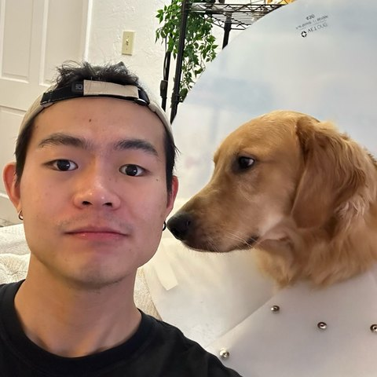

Hugh Zheng
Proves it.
Then ships it.
Bayesian methods for structured data. Theory, algorithms and software.
Postdoc, Texas A&MPhD, FloridaQuant research, SIGBS, USTC
At a glance. Numbers, not adjectives.
papers. JASA, JCGS, Bernoulli (revision) and a preprint.
›open-source projects, from R packages to a desktop app.
›programming languages, from Python and R to Rust and Lean.
›courses taught or assisted, at Florida and USTC.
›talks and posters, including JSM and BAYSM.
›quantitative research internship, 2024.
›Research. Structure, sampled and proved.
JASA · 2026
Combinatorial response data
Regression for integer vectors under hard constraints.
JCGS · 2025
Anti-correlation Gaussian augmentation
Faster Gibbs sampling for L1-ball priors.
Bernoulli · revision submitted
Bayesian spanning-forest clustering
Robust clustering with consistency guarantees.
Preprint · 2026
Extended Aldous–Broder theorem
A direct proof, machine-checked in Lean 4.
Software. Built because I needed it.
Mac app
NoteBuilder
Study notes that do something. Shared as one offline file.
›Command line and editors
latex2arxiv
arXiv-ready in one command.
›Lean 4
aldous-broder-lean
Theorems, machine-checked.
›R package
combreg
Bayesian regression under constraints.
›Web app
Application tracker
“What do I do today?”
›Web app
Quant prep terminal
Learn, drill, simulate.
›Toolbox. Pick a skill, see the proof.
Path. Math, then statistics, then both.
Teaching & talks. Eight courses, two universities.
University of Florida
2021–2023USTC
2018–2020
Let's talk.
Open to conversations about research and data science.
Hand-written HTML, no trackers. Publishes as Yu Zheng before 2026.